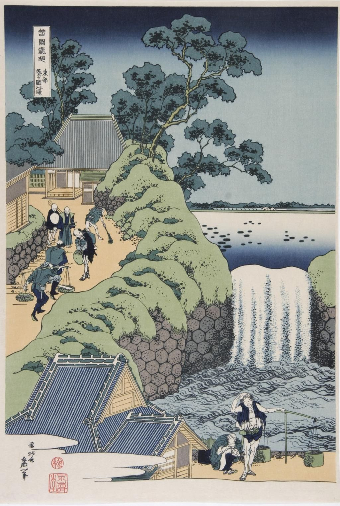

<head>
<meta charset="UTF-8" />
<meta name="keywords" content="drawing, painting" />
<meta name="description" content="drawings by Sunjy" />
<title>Sunjy</title>
<link rel="shortcut icon" type="image/x-icon" href="../../mImages/mCommon/favicon.ico" media="screen" />
<link rel="stylesheet" type="text/css" href="../../mCsses/mCommon/mCssA.css" />
<link rel="stylesheet" type="text/css" href="../../mCsses/mCommon/mCssB.css" />
<link rel="stylesheet" type="text/css" href="../../mCsses/mCommon/mCssC.css" />
<link rel="stylesheet" type="text/css" href="../../mCsses/mCommon/mCssD.css" />
<link rel="stylesheet" type="text/css" href="../../mCsses/mContent/mCssA.css" />
<link rel="stylesheet" type="text/css" href="../../mCsses/mContent/mCssB.css" />
<link rel="stylesheet" type="text/css" href="../../mCsses/mContent/mCssC.css" />
<link rel="stylesheet" type="text/css" href="../../mCsses/mContent/mCssD.css" />
</head>
<script type="text/javascript" src="../../mScripts/mContent/mContentAA.js" /></script>
<script type="text/javascript" src="../../mScripts/mContent/mContentAB.js" /></script>
<script type="text/javascript" src="../../mScripts/mContent/mContentAC.js" /></script>
<script type="text/javascript" src="../../mScripts/mContent/mContentAD.js" /></script>
<script type="text/javascript"></script> 
<script type="text/javascript">
document.write('<div class="mImgAbsolute"></div>');
/*
document.write('<p class="mFontSizeBColor" />From a white paper...</p>');
document.write('<table class="center"><tr><td>');
document.write('');
document.write('</td></tr></table>');
*/
</script>


<script type="text/javascript">
document.write('<p class="mFontSizeBColor" />Waterfall at Aoi Hill </p>');
document.write('<p class="mFontSizeSColor" />Waterfall at Aoi Hill by Katsushika Hokusai.<br><br>Waterfall at Aoi Hill by Katsushika Hokusai depicts a spillway for the release of the overflow of a pond, located in Aoigaoka (“Aoi Hill”) near the Toranomon Gate in Edo.<br><br>The waterfall is a short, broad drop of water from Tameike Pond to the outer moat of the shogun’s castle. The slope along the moat is the Aoizaka (“Aoi slope”), which leads to the top of the hill.<br><br>Here we see nature in a controlled urban setting, with the people engaged in every-day activities. <br></p>');
document.write('<table class="center" /><tr><td>');
document.write('<br>Waterfall at Aoi Hill by Katsushika Hokusai depicts a spillway for the release of the overflow of a pond, located in Aoigaoka (“Aoi Hill”) near the Toranomon Gate in Edo.<br><br>The waterfall is a short, broad drop of water from Tameike Pond to the outer moat of the shogun’s castle. The slope along the moat is the Aoizaka (“Aoi slope”), which leads to the top of the hill.<br><br>Here we see nature in a controlled urban setting, with the people engaged in every-day activities. <br>" />');
document.write('</td></tr></table>');
</script>


